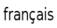
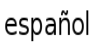

Witaj na stronach Projektu Looking Glass!
|
|
|
|
|
|
|  |
|
|
|
|
|  |
Ściągnij i zainstaluj dla: Linuks/Solaris x86, Windows
Summer of Code Project sponsorowany przez

Co gdyby Twój desktop był trójwymiarowy?
Co gdyby Twoja baza danych płyt CD lub filmów stała się trójwymiarową szafą grającą?
Projekt Looking Glass(LG3D) jest oparty na technologii Java i oferuje użytkownikowi bogatsze wrażenia
z pracy z komputerem i aplikacjami poprzez wizualizację trójwymiarową i jej możliwości.
Projekt jest rozwijany na zasadach open sorce i jest dziełem pracowników działu
Zaawansowanego Wytwarzania Oprogramowania firmy Sun Microsystems (www.sun.com).
Umożliwia uruchamianie istniejących aplikacji w przestrzeni 3D, a także
udostępnia API dla trójwymiarowego menadżera okien oraz dla wytwarzania aplikacji trójwymiarowych.
Na dzień dzisiejszy, integracja z natywnymi aplikacjami jest dostępna tylka dla systemów Linuks i Solarisx86.
Platforma dla wytwarzania oprogramowania 3D jest dostępna dla systemów Linuks, Solaris oraz Windows.

Projekt Looking Glass jest w początkowym stadium rozwoju. Potrzebujemy Twojej pomocy w celu ulepszenia środowiska oraz aplikacji wchodzących w skład LG3D. W celu umożliwienia poznania każdego aspektu technologii, udostępniliśmy kod Looking Glass społeczności, a nie tylko ograniczonej grupie programistów i testerów. Wierzymy, że otwarcie źródeł jest najlepszym sposobem współpracy. Tak więc dołącz do Nas i pomóż zrewolucjonizować istniejący interfejs użytkownika!
Język Java został wybrany jako podstawowy język programowania, ponieważ gwarantuje wysoką produktywność i bezpieczeństwo, dostarcza także bogaty zbiór bibliotek do wykorzystania. W przyszłości planujemy wprowadzić także integrację z językiem C++ w celu uruchamiania natywnych aplikacji w tym języku w LG3D.
FAQ - Najczęściej zadawane pytania , Zasłużeni członkowie , Zespół LG3D na Wiki
| Co nowego? | |||
|---|---|---|---|
Plethora 1.0 już jest!
Pobierz
Wersja 1.0.0 została udostępniona tutaj w sekcji >>Stable Builds<<.
LG3D-LiveCD 3.0 już do ściągnięcia!
Możesz wypróbować LookingGlass3D bez instalacji w systemie korzystając z LiveCD.
Po prostu ściągnij obraz .iso, wypal płytę, włóź ją do napędu i uruchom ponownie komputer. 

Nareszcie, efekty specjalne z filmu "Raport Mniejszości" stały się rzeczywistością dzięki LG3D! Przekonaj się sam oglądając ten film! ( ~67MB w formacie AVI/DivX/MPEG3, wersja w mniejszej rozdzielczości: ~18MB w formacie RM). Obejrzyj także ten film (~9MB, AVI/DivX/PCM) zawierający prezentację przygotowaną przez GoMonkey/Sun specjalnie na targi CeBIT 2006. Dziękujemy Oliverowi Jones'owi za podzielenie się tym nagraniem z nami! Nowy dokument techniczny zatytuowany Projekt Looking Glass - Kompleksowy Przegląd Technologii (w formacie PDF) jest już dostępny po polsku oraz po angielsku. Dla osób nie posługująych się językiem angielskim -- poszukujemy wolontariuszy do przetłumaczenia tego dokumentu na inne języki. Jeśli chcesz pomóc, prosimy napisz post w tym wątku na Forum dyskusyjnym LG3D ! W rozpoczęciu przygody ze środowiskiem Looking Glass pomoże Tobie ten dokument: "Wprowadzenie do Projektu Looking Glass". Najnowsze informacje znajdziesz na forum dyskusyjnym! |
|||
| Najważniejsze wspierane elementy | Dla tych, którzy nie mogą się doczekać... | ||
|
Obecnie koncentrujemy się na zapewnieniu podstawowej funkcjonalności w celu umożliwienia rozpoczęcia eksploracji przestrzeni 3D oraz na dopracowaniu początkowej wersji platformy. W tej chwili platforma wspiera następujące główne elementy:
|
Aby rozpocząć pracę ze środowiskiem a także w celu konfiguracji środowiska programistycznego skorzystaj z dokumentu zatutuowanego "Wprowadzenie do Projektu Looking Glass". Jeśli używasz systemu operacyjnego Windows, przeczytaj "Uruchamianie LG3D pod Microsoft Windows". Gdy będziesz już dysponował działającym środowiskiem programistycznym, przeczytaj "Przewodnik po Projekcie Looking Glass dla programistów" który zawiera szczegółowe informacje na temat Projektu Looking Glass i budowania aplikacji 3D dla tego środowiska. Jeśli używasz NetBeans, przeczytaj "Budowanie i Uruchamianie LG3D w NetBeans". W napisaniu swojej własnej aplikacji dla środowiska LG3D pomoże Tobie "Zbiór tutoriali dla Projektu Looking Glass". Jeśli jesteś gotowy do dołączenia kodu lub dokumentacji do projektu, zapoznaj się z tym dokumentem aby dowiedzieć się jak to zrobić. |
||
Polska społeczność
Podcast o LG3D!
Projekt Looking Glass - Kompleksowy Przegląd Technologii |
Oto lista podprojektów wchodzących w skład pakietu lg3d-core (oraz lg3d-demo-apps i lg3d-incubator). Dziękujemy za partycypację w pracach! Jeśli chciałbyś zgłosić jakąś propozycję, to super! Prosimy dopisz się w tym wątku na forum javadesktop.org i przedstaw Nam swoje idee. Odwiedź stronę lg3d-x11 aby zapoznać się z tematami specyficznymi dla integracji z X11. Jeśli chciałbyś pomóc w pracach nad jednym z istniejących projektów napisz posta na Forum, z całą pewnością zespołom przyda się ekstra pomoc.

Kirk Turner (gameldar), Hideya Kawahara (hideya)
Kirk Turner (gameldar), William Tracy (afishionado)
Ten projekt jest miejscem dla pracy nad wszelkimi dodatkowymi modelami 3d, teksturami oraz elementami graficznymi dla Projektu Looking Glass. Twoja pomoc będzie nieoceniona!
| Nazwa | Opis | Nazwa pakietu | Właściciel(-e) |
|---|---|---|---|
| Aim3d | Komunikator w 3D | org.jdesktop.lg3d.apps.wilkoaim3d | Jack Wu (wulabs) |
| BgManager | Zmieniarka tła | org.jdesktop.lg3d.apps.bgmanager | Radek Kierner (radeczka) |
| BlackGoat | Klient poczty | org.jdesktop.lg3d.apps.blackgoat | Dai Odahara (dai) |
| Browser3D | Przeglądarka internetowa w 3D | org.jdesktop.lg3d.apps.browser3d | beer28, David Vallejo (dragmor) i David Weizades (ddew) |
| Clock | Trójwymiarowy zegarek | org.jdesktop.lg3d.apps.clock | Juan González (opsi) |
| CMU 3D Filemanager UI | Menadżer plików w 3D | edu.cmu.sun | Braden Frederick Kowitz (braden_kowitz) |
| CosmoSchedulerD | Kalendarz | nu.koidelab.cosmo | Koji Yakushiji (ben3), Yoshifumi Maeda (fumi_od), Hirokazu Minamisako (gold_marlboro_ja) i Hiroshi Koide (koide) |
| DemoJMFJ3D | Odtwarzacz multimedialny oparty na JMF | org.jdesktop.lg3d.apps.jmf23D | sat1196 |
| Fm3D | Menadżer plików w 3D | org.jdesktop.lg3d.apps.fm3d | John Maltby (jmaltby) |
| Gol3D | Symulacja życia | org.jdesktop.lg3d.apps.gol3d | dwarfy_lenain (dwarfy) |
| Googler | Klient Google | org.jdesktop.lg3d.apps.googler | Juan González (opsi) |
| JavaWorkSpace | Sieciowe inteligentne środowisko pracy | org.jdesktop.lg3d.apps.intel3d | Ashish (sri_ashish7s) |
| Knowledge-web 3D | Knowledge-web 3D UI demo | org.jdesktop.lg3d.apps.kwebdemo1 | Patrick McKercher (patmck) i James Zaun (zaun) |
| Launcher | Menadżer oprogramowania | org.jdesktop.lg3d.apps.luncher | Henrik Baastrup (hbaastrup) |
| LgScope | Menadżer plików w 3D | org.jdesktop.lg3d.apps.lgscope | Eiji INOUE (e_inoue) |
| Ls3D | Trójwymiarowe "ls" | org.jdesktop.lg3d.apps.ls3d | Endo Yasuyuki (yasuyuki) |
| NLC | Natural Language Control | org.jdesktop.lg3d.apps.nlc | Harsh Jain (harshatcse) |
| Pingpong | Prosta gra w 3D | org.jdesktop.lg3d.apps.pingpong | Johann Glaser (hansiglaser) |
| Weather | Prognoza pogody na pulpicie | org.jdesktop.lg3d.apps.weather | Brian Hursey (bhursey) |
| Zoetrope | Przeglądarka obrazów | org.jdesktop.lg3d.apps.zoetrope | Yuichi Sakuraba (sakuraba) |
| Język | Właściciel(-e) |
|---|---|
| Chiński | Wen Peng (wenpeng) |
| Czeski | Petr Hejl (sickboy) |
| Duński | Martjin Kools (marve) |
| Francuski | jibe77, Pierre (pinaraf) |
| Niemiecki | Christian Ost (cost) i Maik Ladwig (moonfire) |
| Polski | Stanisław Styszyński (diabeteo) |
| Włoski | Giordano Fracasso (giosquad), Danilo Bonardi (trix180) i Di Fazio Raffaele (raffo) |
| Japoński | Yuka Kamiya (kyuka), Hideyuki Otokawa (otokawa), Yuichi Sakuraba (sakuraba), Kazuhiro Kazama (kazama) i Endo Yasuyuki (yasuyuki) |
| Rumuński | Abibula Aygun (aygun) |
| Hiszpański | Sergio Ivan Marcin (bitbeat) |
| Rozdział | Właściciel(-e) |
|---|---|
| Podstawowe informacje | Martijn Kools (marve), David Weizades (ddew), Paul Shoemaker (t0rn) |
| Idee i dyskusje na temat trójwymiarowego interfejsu użytkownika | Paul Shoemaker (t0rn), qgnjon, David Weizades (ddew) |
| LG3D Development Team/informacje o wersjach | Van der Haegen Mathieu (dwarfy) |
| Wskazówki dla programowania aplikacji dla LG3D | Van der Haegen Mathieu (dwarfy) |
| Dokumentacja | Van der Haegen Mathieu (dwarfy) |
Pierwszym krokiem jest rozważenie zgłoszenia się jako Obserwatora projektu, oraz czynny udział na forum dyskusyjnym. Prosimy zapoznaj się z dokumentem zatytuowanym Contributing to Project Looking Glass aby uzyskać więcej informacji na temat dołączenia do Projektu. Przeczytaj także JavaDesktop Community Governance Guidelines w celu poznania zasad partycypowania w projektach prowadzonych przez społeczność JavaDesktop, takich jak Projekt Looking Glass.
Informacje o istniejących problemach i zgłoszone propozycje rozwoju środowiska mogą być znalezione używając Issue tracker'a . Bazę możesz przeglądać w poszukiwaniu defektów i propozycji lub innych zgłoszeń. Jeśli napotkałeś nieudokumentowany problem, prosimy zgłoś go. Możesz także przeszukiwać archiwum listy mailingowej dostępne na forum dyskusyjnym w serwisie javadesktop.org w celu pozyskania dalszych informacji na temat danego problemu.
Wypełniając zgłoszenie, prosimy spróbuj być jak najbardziej precyzyjnym. Zawrzyj informacje o Twoim komputerze i symptomach problemu, z którym się zetknąłeś. Gdy nastąpi awaria,następujące pliki logów dostarczą bardzo ważnych informacji:
Jesli nie jesteś obeznany z Issue tracker'em, możesz zapoznać się z następującymi artykułami:
Projekt Looking Glass wciąż ewoluuje. Najlepszym sposobem, aby być na bieżąco jest subskrypcja listy mailingowej. Kliknij Mailing lists w sekcji Project tools w panelu po lewej stronie na https://lg3d.dev.java.net/. Do wyboru jest kilka list mailingowych w zależności od poziomu Twojego zainteresowania:
Artykuły opisujące Projekt Looking Glass:
Składamy podziękowania następującym firmom za udostępnienie za darmo narzędzi w celu wykorzystania ich w projektach OpenSource.

Dziękujemy za zainteresowanie projektem i poświęcenie czasu na przeczytanie tego tekstu. Mamy nadzieję, że dołączysz do projektu i będziesz razem z nami cieszył się z poszukiwania nowych rozwiązań w zakresie trójwymiarowego interfejsu użytkownika. Mamy także kanał na IRC-u, niezbyt aktywny (ale to dopiero początek), oto link: #lg3d serwer: irc.freenode.net
Zespół programistów Projektu Looking Glass